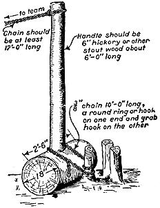
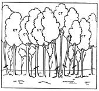
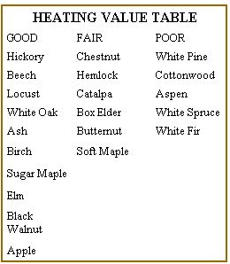

The Woodlot
A simple program that will help keep your woods in good condition, and provide firewood and some lumber, from the Have-More Plan.
By the Mother Earth News editors
March/April 1970
Originally, our house was located in the midst of two acres of woods. As we've cleared our land, we've had plenty of firewood.
It's a good idea to have an acre or so of woods. Just the dead and fallen timber will give you about a cord of wood per acre each year for your fireplace - and some fence posts too. Maybe you can harvest some lumber - it's much cheaper to haul it to a local sawmill than it is to buy lumber these days. About 6 months of exposure to sun and air is necessary to dry green lumber.
A woodlot is little trouble. Here is a simple program that will help you keep your woods in good condition and at the same time provide you with firewood and some lumber:
1.) Fence out livestock. They eat saplings, injure young roots, cause erosion, and in time can ruin a woodlot.
2.) Take all diseased or down trees for firewood. 3.) Practice thinning. This simply means cutting out the weed trees and "crowders" so the good lumber trees will grow faster. It should be done about every two years. Save what you cut out for fenceposts bean poles, etc. 4. ) Prune off excess branches on lumber trees to prevent knots. Save these branches for firewood. Learn to recognize your valuable lumber trees, and mark them with a band of white paint. 5.) Harvest every lumber tree before it becomes overage. You should learn the proper size tree to cut. Government studies show a 9 inch maple will bring only 1/36 of the price paid for a 26 inch maple. The profitable way to sell is to make the cutting yourself and haul the logs to the mill. 6.) Plant seedlings in any bare patches you find in your woodlot. Trees will grow in the poorest possible soil where no crops can be grown.
7.) If your trees are attacked by blight, disease, or insects, ask advice from your State Forester, or County Agricultural Agent.
8.) Protect your woods from fire!
For construction on your place you can hire (or borrow) a portable sawmill to come to your woodlot and saw up lumber trees there. This will be a lot cheaper than buying lumber. Whatever you do, never cut an entire stand of trees. Leave at least 5 large seedproducing trees per acre, and plenty of saplings and younger trees.
Fence Posts
Soft woods such as willow, soft maple, beech, and box elder will last only 3 to 5 years in the ground as fence posts. But you can make them last 20 to 25 years by boiling the lower ends in a steel drum of creosote. Let them cool in a second drum of creosote for best results.
How Much Is A "Cord"? A standard cord is a stack of 4-foot lengths 4 feet high and 8 feet long. However, firewood is usually cut in shorter lengths so a "cord" of firewood may not be a standard cord. If you have occasion to compare different prices for a "cord" of firewood, it's a good idea to get the measurements, so there is no misunderstanding.
Clearing
By all means don't try to save money by buying wooded land and clearing it to make your garden or pasture. Clearing is really tough work and it's expensive no matter what method you use. You have a choice of four methods of removing stumps ( after you've cut down the trees) and you'll probably have to use all four ways on some of the big stumps before getting them out! The most primitative is to dig and grub the stump out with a pickaxe and axe. It's a long tough job. Allow at least 1/2 a day to dig out a 6
inch stump this way. A quicker way is to burn them out, using a portable burner which you may be able to borrow from a neighbor. We burn out small stumps this way in less than 2 hours. The burner has a strong forced draught which produces intense heat. However, it doesn't burn all the roots-you have to chop them out. Blasting is another way. Small stumps can be blasted entirely out of the ground. and large stumps can be loosened up this way and then pulled out with a block and tackle or a patented pulling device hitched to a team or tractor. For details and safety precautions on blasting write to the Superintendant of Documents, Washington, D. C. for U.S.D.A. Bul. x$191.
All in all, I really believe the best method of clearing is to hire a bulldozer. It's amazing how much damage a bulldozer can do in a short time. In just eight hours the bulldozer we hired (at $5.00 an hour) cleared about 20 stumps, 2 big boulders, and did all the grading and filling necessary to give us a good level half-acre garden plot.
Erosion Control
If you have waste land where the soil is too poor for crops, you can grow trees there. They'll take many years to grow to maturity but meanwhile they prevent erosion, add beauty to your homestead, and increase its value. (In some localities you will be assessed slightly higher taxes for the acres you plant to forest, but they're worth it.) Your State Forestry Department may provide free seedling trees
 A simple stump puller like this can easily be made. It increases the pulling power of a team, car, or tractor about 6 times. |
 Diagram of a typical group of trees showing which trees to cut and which to save. Trees marked CT are the crop trees you are saving till ready for harvest. Notice you cut some large trees to allow younger trees to grow. |
 |
|
 |
|
|